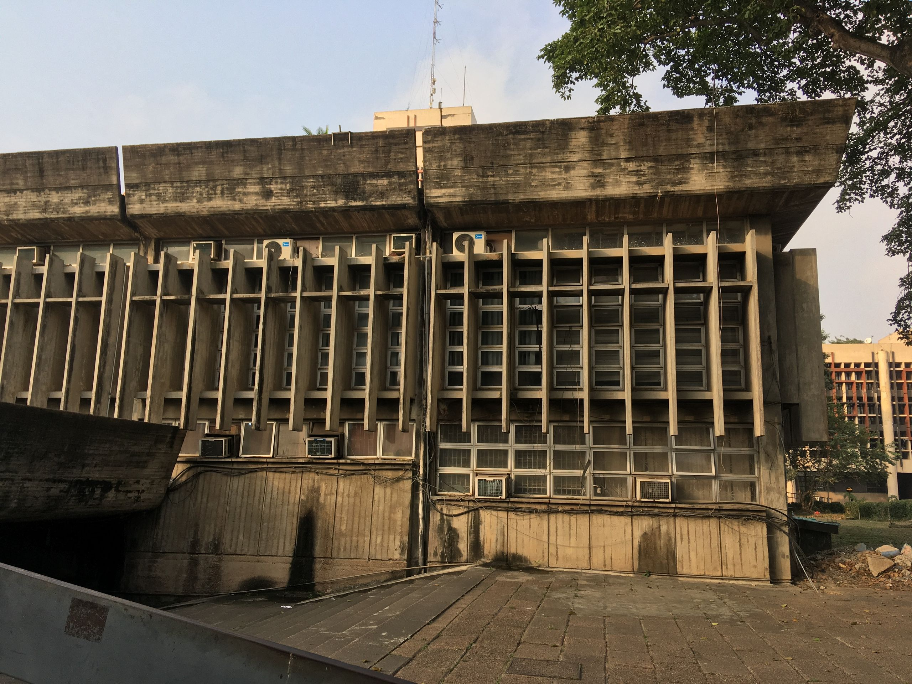
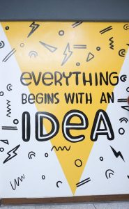

About
the Library.
The academic hub of the University of Lagos, the University of First Choice and the Nation’s Pride, serving teaching, research and community service.
It gives me great pleasure to welcome you to the University of Lagos Library, the academic hub of the University of Lagos, the University of First Choice and the Nation’s Pride. We are committed to creating an enabling environment to support cutting edge research as well as high quality teaching and learning.
I invite you to explore our website to familiarise yourself with our resources. You can also make use of our facilities, advisory and training services provided by professional librarians. The University Library continually works to further the development of its products and services.

The primary and foremost source of reliable information.
The University Library’s vision is to be the primary and foremost source and vessel of reliable information for the University community in its quest to realise its noble vision concerning teaching, research and community services.
Information seeking made rewarding and enjoyable.
The Library sets out to provide information services to meet the intellectual needs of members of the University community, and to make information seeking activity most rewarding and enjoyable for the various categories of users in the community. The Library’s aim is to promote greater utilisation of library services for research.
Four departments,
one library.

The interface between the library and its users
Circulation, Reference, Law Library, Reserved Book Room, Boulos Engineering Library, Visually Impaired Resource Centre and Faculty Libraries.

Selection, cataloguing, serials and bindery
Acquisitions, Cataloguing, Serials, Gift and Exchange, and the Bindery which repairs and restores books and print materials.

The Gandhi Library, established 2 October 1968
Rare and expensive books, primary source materials, theses and dissertations, the University Archives and Special Collections.

Learning Commons, Multimedia Studio & ICT
Coordinating the Library’s state-of-the-art Multimedia Studio, collaborative Learning Commons, and ICT services.
1962
The year the University of Lagos was established. The archives chronicle its history from inception to the present.
2 Oct 1968
Established from a donation by the Indian government and community, and named after Mahatma Gandhi.
123+
Artefacts held in the museum on the first floor of the Akintunde Ojo Building, next to the Library.
19
Nineteen faculty libraries across campus, each under a named liaison librarian.